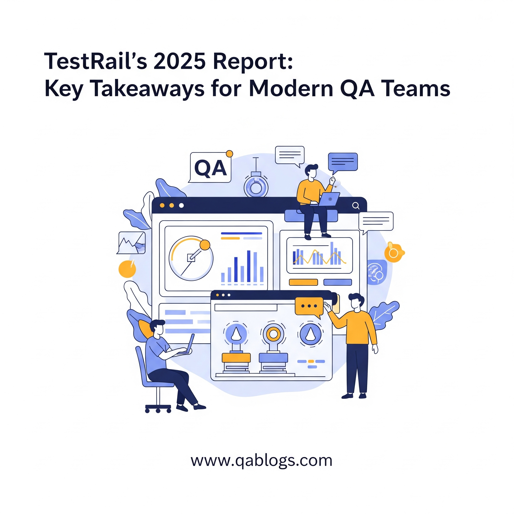

TestRail's 2025 Report: Key Takeaways for Modern QA Teams

Key Takeaways
- 43% of QA teams prioritize increased test automation for faster releases
- 39% of teams are adopting shift-left practices for early defect detection
- 35% focus on better testing environments and reusable test data
- Automation challenges include fragile test suites and skill gaps
TestRail's Fourth Edition Software Testing & Quality Report, released on June 5, 2025, provides critical insights into the evolving landscape of Quality Assurance (QA), drawing from a survey of thousands of QA professionals worldwide. The report highlights how automation is driving faster release cycles and improving software quality, while also identifying persistent challenges for modern QA teams. This blog on QA Blogs summarizes the key findings, focusing on automation's role in enabling efficiency and quality, and offers actionable takeaways for QA teams in 2025—all optimized for SEO to reach QA professionals seeking to modernize their testing strategies.
Overview of TestRail's 2025 Report
The TestRail 2025 Software Testing & Quality Report captures the state of QA amidst accelerating development cycles, rising expectations, and an expanding tool ecosystem. Key areas of focus include test automation, shift-left practices, and the need for better environments and metrics. The report underscores QA's strategic role in balancing speed and quality, with automation emerging as a pivotal enabler for faster releases and higher quality software.
Key Findings: Automation's Role in Faster Release Cycles and Better Quality
1. Automation as a Top Priority for Speed
Automation remains a top objective for QA teams in 2025, with 43% of respondents prioritizing increased test automation to support faster release cycles.
Why It Matters: Faster release cycles are a hallmark of modern development, with many teams deploying bi-weekly or even daily updates. Automation reduces manual testing bottlenecks, enabling teams to keep pace with Agile and DevOps demands.
Impact on Release Cycles: Automated tests, such as AI-driven and self-healing tests, minimize maintenance overhead and provide quicker feedback loops. This allows developers to address issues early, reducing delays in the release pipeline.
Example: A team automating 40% of their regression tests can now execute them in hours instead of days, supporting bi-weekly deployments without compromising coverage.
2. Automation Driving Better Quality
The report highlights that automation not only speeds up testing but also enhances software quality by catching defects earlier and improving test coverage.
Early Defect Detection: 39% of teams are adopting shift-left practices, using automation to test during development rather than post-development. This reduces production bugs, a top QA goal in 2025, by identifying issues before they reach users.
Comprehensive Coverage: Automation enables broader test coverage, a key objective tied with automation in the report. Automated suites can run thousands of test cases across different environments, ensuring consistent quality.
Example: Automated API tests can validate a payment gateway's functionality across multiple scenarios, ensuring reliability before it reaches production, thus improving overall quality.
3. Challenges in Scaling Automation
Despite its benefits, automation remains a significant challenge for 43% of QA teams, hindering their ability to fully realize faster releases and better quality.
- Fragile Test Suites: Teams report issues with unstable automated tests that fail inconsistently, slowing down release cycles and eroding confidence in results.
- Skill Gaps and Tooling Issues: A lack of skilled personnel and inconsistent tooling (e.g., disjointed systems) complicates automation efforts.
- Late Involvement: 32% of QA professionals feel disconnected from early-stage development, making it harder to automate tests proactively and impacting quality.
4. Better Environments and Test Data for Efficiency
35% of teams are prioritizing better testing environments and reusable test data to support automation, directly contributing to faster releases and improved quality.
Why It Matters: Unreliable environments slow down test execution, while poor test data leads to incomplete coverage. Stable environments and quality data ensure automated tests run smoothly and accurately.
Impact on Quality: Reusable test data allows teams to simulate real-world scenarios, catching edge cases early and improving software reliability.
Example: A financial app team using reusable test data for payment transactions can automate tests across different user scenarios, ensuring consistent quality in production.
5. Metrics for Quality and ROI
QA teams are tracking automation metrics like the number of automated tests created (43%) and test execution rates (42%), but struggle to measure ROI, which limits their ability to justify automation investments.
Why It Matters: Without clear ROI, teams face challenges in securing resources for automation, slowing down adoption and impacting release speed.
Desired Metrics: Teams want metrics that tie QA efforts to business impact, such as customer satisfaction or revenue growth, to better demonstrate automation's value in improving quality.
Example: A team automating 50% of their tests might track defect escape rates to show how automation reduces production bugs, directly linking to quality improvements.
Actionable Takeaways for QA Teams in 2025
Based on the report's findings, here are practical steps for QA teams to leverage automation for faster release cycles and better quality:
- Invest in Automation Skills: Train your team on automation tools like Selenium, Cypress, or Playwright, which support faster test execution and broader coverage.
- Adopt Shift-Left Practices: Collaborate with developers early to automate tests during coding, catching defects before they reach production and improving quality.
- Prioritize Stable Environments: Use containerized environments (e.g., Docker) to ensure consistency in test execution, enabling faster and more reliable automated tests.
- Leverage Reusable Test Data: Create a repository of reusable test data to simulate diverse scenarios, enhancing coverage and quality without slowing down releases.
- Track Meaningful Metrics: Beyond test execution rates, measure defect escape rates or user satisfaction to demonstrate automation's impact on quality and justify investments.
- Integrate with CI/CD Pipelines: Automate test execution within CI/CD tools like Jenkins or GitHub Actions to provide real-time feedback, supporting faster release cycles.
How These Findings Align with 2025 QA Trends
The TestRail 2025 Report aligns with broader QA trends in 2025, as seen in previous QA Blogs posts:
- Shift-Left Testing: As discussed in "Shift-Left Testing: Embedding Test Cases Early in the SDLC," early testing complements automation by catching defects sooner, improving quality.
- Accessibility Compliance: From "Navigating the European Accessibility Act," automation can help scale accessibility testing, ensuring compliance without slowing down releases.
- API Testing: As noted in upcoming topics like "Designing Effective Test Cases for Privacy-First Financial APIs," automation is critical for validating APIs, supporting faster and higher-quality releases.
Conclusion
TestRail's 2025 Software Testing & Quality Report underscores automation's pivotal role in enabling faster release cycles and better quality for modern QA teams. By increasing automation (43% priority), adopting shift-left practices (39%), and improving environments and test data (35%), teams are accelerating releases while reducing production bugs. However, challenges like fragile test suites, skill gaps, and late involvement highlight the need for strategic investments in skills, tools, and processes. QA teams that act on these findings—by automating early, optimizing environments, and tracking meaningful metrics—can deliver high-quality software at the speed modern development demands.
Ready to modernize your QA process with automation? Share your automation strategies in the comments, and explore more QA insights on QA Blogs!
Join Our Community of QA Professionals
Get exclusive access to in-depth articles, testing strategies, and industry insights. Stay ahead of the curve with our expert-curated content delivered straight to your inbox.
Nikunj Mistri
Founder, QA Blogs
About the Author